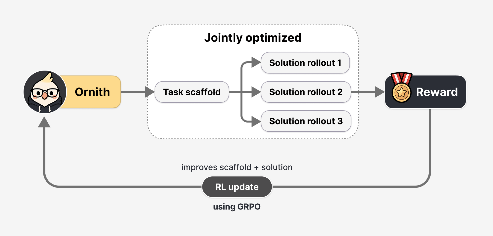
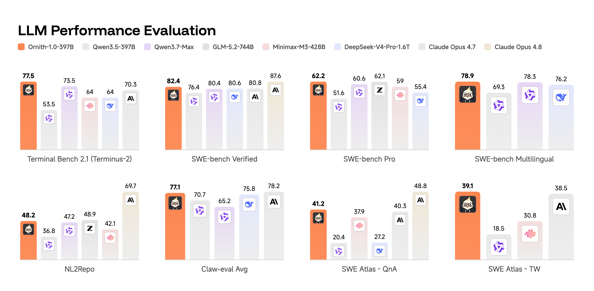
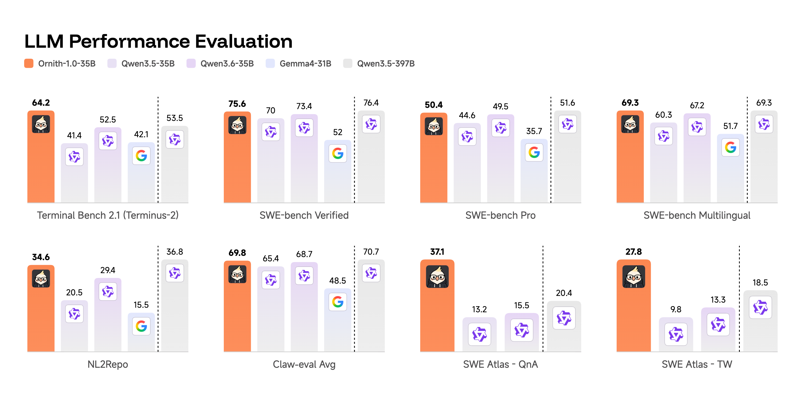
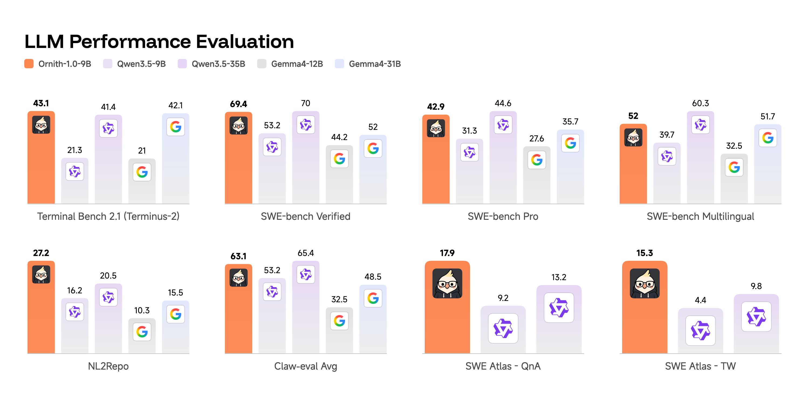

35B 干翻 397B？Ornith-1.0 的惊人跑分背后，是真突破还是又一次 benchmaxxing
一个让人想揉眼睛的数字
2026 年 6 月 25 日，一个名叫 DeepReinforce 的团队丢出了开源模型 Ornith-1.0，附带的跑分表里藏着一个反常识的数字：仅有 350 亿参数的 Ornith-1.0-35B，在 Terminal-Bench 2.1 上拿到 64.4 分，超过了参数量足足大 11 倍的 Qwen 3.5-397B（53.5 分）。
更刺激的还在后面。旗舰版 Ornith-1.0-397B 在 SWE-Bench Verified 上报出 82.4 分、Terminal-Bench 2.1 上 77.5 分，两项都压过了 Claude Opus 4.7（80.8 / 70.3）。一个 MIT 许可、可以随便下载商用的开源模型，在编程基准上盖过了几个月前还是闭源天花板的 Claude——这要是真的，那是大新闻。
但 X（推特）上的反应，比跑分表冷静得多。有人留言"smells like benchmaxxing"（一股刷榜味），有人直言"almost all engagement with this seems synthetic"（互动数据看着像刷的），还有 DeepSeek 的资深观察者 Teortaxes 公开表示怀疑："Qwen 3.5 base 凭什么这么轻松就逼近甚至超过 GLM 5.2？在严肃的人上手测过之前，我保留怀疑。"
所以这篇文章想做一件事：把 Ornith-1.0 的技术真章、它的跑分、以及围绕它的质疑，全部摊开。 同时把它和当下最值得关注的几个对手——Qwen 3.5、Gemma 4、DeepSeek V4、GLM 5.2、Claude Opus 4.8、GPT-5.5——逐项对齐，看看这个"35B 干翻 397B"的故事，到底有几分可信。
Ornith-1.0 是谁做的，凭什么值得看
先说出身。DeepReinforce 不是无名之辈。这个团队此前最出名的工作是 CUDA-L1：用一套对比强化学习（Contrastive RL）框架，让 LLM 自动优化 CUDA kernel，在 KernelBench 的 250 个真实 GPU 任务上拿到平均 3.12× 加速、峰值 120× 加速，而且代码开源、结果可复现。后续还有针对 HGEMM 矩阵乘法的 CUDA-L2。
换句话说，这是一支把"用 RL 把大模型逼成某个专项高手"当作看家本领的团队。Ornith-1.0 延续的正是这条路线，只不过这次的"专项"从 CUDA 优化换成了更通用的 agentic coding（智能体编程）。
Ornith-1.0 不是一个模型，而是一个家族，全部基于 Gemma 4 和 Qwen 3.5 的预训练权重做后训练（post-training），全系采用 MIT 许可证：
| 型号 | 架构 | 定位 | 发布状态 |
|---|---|---|---|
| Ornith-1.0-9B | Dense | 边缘设备 / 本地部署 | ✅ 已开源（含 GGUF） |
| Ornith-1.0-31B | Dense | 单卡工作站 | ⏳ 官方宣告但尚未上架 |
| Ornith-1.0-35B | MoE | 性能与效率平衡 | ✅ 已开源（含 GGUF / FP8） |
| Ornith-1.0-397B | MoE（约 17B 激活） | 前沿规模 | ✅ 已开源（含 FP8） |
需要提醒的是：官方技术博客把家族正式描述为"9B Dense、31B Dense、35B MoE、397B MoE"四个型号，31B Dense 是官方明确列出的家族成员、并非空穴来风。但截至发稿，Hugging Face 上实际同步开源的只有 9B、35B、397B 三个（及各自的量化版本），31B Dense 尚未放出。X 上已有用户当场追问"31b dense 去哪了"。所以现阶段它属于"官方已宣告、但发布时未同步开源"的型号，想用的人还得再等等。这种"宣告的比放出的多"的小细节，本身也是评估一次发布成色时值得留心的地方。
这里有个关键事实要先记住：Ornith 是站在 Gemma 4 和 Qwen 3.5 的肩膀上做的后训练，它本身并没有从零预训练一个底座。所以它跑分的对照组里，"超过 Qwen 3.5-397B"这种说法，本质是"我用 RL 后训练，把同源底座的能力又往上拉了一截"。这既是它最大的卖点，也是质疑声的来源——后面会展开。
核心创新：让模型自己设计"工作流"
Ornith-1.0 真正有意思的地方，不在跑分，而在它的训练方法。论文里叫 Self-Scaffolding（自搭脚手架），我觉得这是 2026 年 agentic coding 方向里少见的、有原创性的想法。
什么是"脚手架"
做过 AI 编程 Agent 的人都知道，模型本身的"智商"只是一半，另一半是 harness（驱动框架）/ scaffold（脚手架）：怎么规划任务、怎么管理记忆、怎么处理报错、怎么调用工具、什么时候重试。同一个模型，套不同的脚手架，SWE-bench 分数能差出十几个点。我们在《Agent 的隐形另一半：Harness 工程》里专门聊过这件事。
过去的做法是：人工精心设计一套脚手架，然后用它去驱动模型做强化学习。脚手架是固定的、人写的。
Ornith 的做法：脚手架也让模型自己学
Ornith-1.0 把脚手架本身变成了一个可学习的对象，让它和模型策略一起进化。每个 RL 训练步分两个阶段：
- 第一步：给模型一个任务，以及它上次为这类任务用过的脚手架，让模型先提出一个改进版的脚手架（更好的计划、记忆模式、工具节奏、错误处理逻辑）。
- 第二步：再让模型基于这个新脚手架去生成解题方案（solution rollout）。
最后，解题的奖励信号会同时回传给两个阶段。这意味着模型不只是被优化去"写出更好的答案"，还被优化去"设计出能引出更好答案的工作流"。
反复迭代之后，就形成一个正反馈循环：脚手架不断变异、被筛选，逐渐收敛到那些能稳定带来高奖励轨迹的形态，针对不同任务类别（修 bug、跑终端、改大仓库）的策略会自动涌现，不再需要人手工调 harness。Rohan Paul 有句话总结得挺好：这让模型"不再像一个照着一份死板清单干活的程序员，而更像一个学会了针对不同类型问题该用哪份清单的程序员"。

图片来源：DeepReinforce 官方技术博客 Ornith-1.0
防"作弊"是当作训练问题来解的
这里有个绕不开的风险：一旦让模型自己设计脚手架，它就有动机去钻空子（reward hacking）——比如偷看可见的测试文件、把预期输出硬编码进去、或者直接复制环境里的标准答案，从而骗过验证器拿到奖励，却根本没真正解题。
Ornith 用了三层防御来堵这个口子：
- 固定信任边界：环境、工具接口、测试隔离是不可变的、模型碰不到的，模型只能进化"内层"的策略脚手架（记忆、错误处理、编排逻辑）。
- 确定性监控：一个规则明确的监控器，专门抓"读取被隐藏的路径、篡改验证脚本、调用沙箱外动作"这类行为，一旦发现就把该轨迹的奖励清零，并从优势计算里剔除。
- 冻结的 LLM 裁判：因为有些"意图层面"的钻空子可以完全在合法工具范围内发生，所以再加一个冻结的 LLM 裁判，在验证器之上做否决（veto）。
训练上还用了异步 pipeline-RL 和 token 级的"陈旧度加权"（staleness weight）来处理长 rollout 的 off-policy 问题，损失函数是带 staleness 权重的 GRPO。细节不展开，结论是：这套方法在工程上是认真的，不是 PPT。
值得点出的是，"把防奖励黑客当成训练时的一等公民来设计"这件事，恰好踩在 2026 年最热的痛点上——这一点我们放到争议部分再说。
跑分对齐：Ornith vs 六大主流模型
下面是重点。我把官方公布的数字，和几个主流对照模型放在一起。先看旗舰级（397B 这一档）：
| 基准 | Ornith-1.0-397B | DeepSeek V4 Pro | Claude Opus 4.7 | GPT-5.5（参考） | Claude Opus 4.8（参考） |
|---|---|---|---|---|---|
| Terminal-Bench 2.1（Terminus-2） | 77.5 | 67.9 | 70.3 | — | — |
| SWE-Bench Verified | 82.4 | 80.6 | 80.8 | 88.7 | 88.6 |
| SWE-Bench Pro | 62.2 | 55.4 | 64.3 | 58.6 | 69.2 |
| SWE-Bench Multilingual | 78.9 | 76.2 | — | — | — |
| ClawEval（平均） | 77.1 | 75.8 | 78.2 | — | — |
数据来源：Ornith 官方技术博客（397B / DeepSeek V4 Pro / Claude Opus 4.7 同表），GPT-5.5 与 Claude Opus 4.8 的 SWE-Bench 数字来自第三方榜单与 Anthropic 系统卡，跨表对比仅供定位参考。内容经改写以符合授权要求。
怎么读这张表，三个关键点：
-
Ornith 对标的是 Claude Opus 4.7，不是最新的 4.8。 这点特别重要。Anthropic 在 2026 年 5 月 28 日发布了 Opus 4.8，SWE-Bench Verified 飙到 88.6、SWE-Bench Pro 达到 69.2。而 GPT-5.5（4 月发布）SWE-Bench Verified 也有 88.7。Ornith-1.0-397B 的 82.4，离这两个真正的当代前沿，还差着 6 个点。 它"超越 Claude Opus"的说法，只在挑选了上一代 4.7 的前提下成立。
-
在 SWE-Bench Pro 上，Ornith 反而落后。 SWE-Bench Pro 是专门设计来抗污染的硬骨头基准（长程任务、私有代码库）。Ornith-397B 只有 62.2，低于 Claude Opus 4.7 的 64.3，更远低于 Opus 4.8 的 69.2。越是难刷的榜，Ornith 的领先越是消失。 这本身就是一个信号。
-
在 Terminal-Bench 2.1 上 Ornith 确实亮眼。 77.5 这个数字，比表里所有开源对手都高，也高于 Opus 4.7。如果属实，说明它的"自搭脚手架"在终端类长程任务上是真有效的——这恰好是脚手架影响最大的场景。

图片来源：DeepReinforce 官方技术博客 Ornith-1.0
再看中端（35B 这一档），这是"35B 干翻 397B"故事的核心：
| 基准 | Ornith-1.0-35B | Qwen 3.5-35B | Qwen 3.6-35B | Gemma 4-31B | Qwen 3.5-397B |
|---|---|---|---|---|---|
| Terminal-Bench 2.1 | 64.2 | 41.4 | 52.5 | 42.1 | 53.5 |
| SWE-Bench Verified | 75.6 | 70.0 | 73.4 | 52.0 | 76.4 |
| SWE-Bench Pro | 50.4 | 44.6 | 49.5 | 35.7 | 51.6 |
| NL2Repo | 34.6 | 20.5 | 29.4 | 15.5 | 36.8 |
这张表才是 Ornith 最有说服力的地方。Ornith-35B 在 Terminal-Bench 2.1 上（64.2）确实碾压了同档的 Qwen 3.5-35B（41.4）、Qwen 3.6-35B（52.5）、Gemma 4-31B（42.1），甚至超过了它自己 11 倍大的同源底座 Qwen 3.5-397B（53.5）。
但请注意右边那一列的细节：在 SWE-Bench Verified、SWE-Bench Pro、NL2Repo 上，Ornith-35B 其实仍然略输给 Qwen 3.5-397B（75.6 vs 76.4、50.4 vs 51.6、34.6 vs 36.8）。所以准确的说法不是"35B 全面干翻 397B"，而是"35B 在 Terminal-Bench 这类对脚手架最敏感的任务上超过了 397B，在其他基准上接近但仍略逊"。营销话术挑了最戏剧化的那一项来讲，这很正常，但读者得知道全貌。

图片来源：DeepReinforce 官方技术博客 Ornith-1.0
最后是边缘端（9B 这一档）：
Ornith-1.0-9B 报出 Terminal-Bench 2.1 = 43.1、SWE-Bench Verified = 69.4。一个能在 RX 6900 XT 这种消费级显卡上跑起来的 9B 模型，SWE-Bench Verified 接近 70，比肩 Gemma 4-31B 和 Qwen 3.6-35B——如果属实，这对本地部署、数据不出门的开发者是真有吸引力的。事实上已经有用户反馈：在 RX 6900 XT + Threadripper 上跑 35B 的 GGUF 版本，主观体验"介于 GPT-5.3 和 5.4 之间"。

图片来源：DeepReinforce 官方技术博客 Ornith-1.0
横向定位：这一串模型，到底各自站在哪
把跑分放下，从"我该用谁"的角度，给这几款模型做个定位：
- Claude Opus 4.8：当代闭源编程天花板之一。SWE-Bench Pro 69.2 是目前最高，agentic 可靠性、计算机操作、诚实度（幻觉率）都领先。真实复杂工程的默认选项，但贵。
- GPT-5.5：与 Opus 4.8 在 SWE-Bench Verified 上几乎打平（88.7 vs 88.6），1M 上下文，终端/CLI 工作流、长上下文检索、token 效率更优，输入端更便宜。
- GLM 5.2：智谱 6 月 13 日发布，744B MoE、1M 上下文、MIT 许可。开源阵营里"能力 / 成本比"的标杆，有评测显示它以约 1/6 的成本逼近 GPT-5.5。Teortaxes 的质疑正是冲着"Qwen 3.5 底座凭什么轻松超过 GLM 5.2"来的。
- DeepSeek V4 (Pro)：算法与竞赛编程极强（LiveCodeBench、Codeforces 全球领先），SWE-Bench Verified 80.6，agentic 编程扎实。
- Qwen 3.5 / 3.6：Ornith 的同源底座，开源生态最广、尺寸最全，27B/35B 是性价比小钢炮。
- Gemma 4：Google 的开源系列，能在笔记本上跑还能打，主打轻量与可及性，也是 Ornith 9B 的底座之一。
- Ornith-1.0：专精 agentic coding 的"后训练特化兵"。它不追求通用能力，而是把同源底座在编程 Agent 任务上的天花板，用自搭脚手架的 RL 又顶高了一截。定位类似"给 Qwen/Gemma 装了一套会自我进化的编程外骨骼"。
一句话概括选型：要最强真实工程能力且预算够 → Opus 4.8 / GPT-5.5；要开源高性价比通用 → GLM 5.2 / DeepSeek V4；要本地跑的编程专用、且愿意自己验证 → 试试 Ornith 9B / 35B。
直面争议：是真突破，还是又一次 benchmaxxing
现在回到标题里的问题。我的判断分三层。
第一层：方法是真的，且方向正确
Self-Scaffolding 不是包装话术。让脚手架和策略联合进化、把防奖励黑客当训练问题来解，这是有原创性、也符合 DeepReinforce 一贯"用 RL 做专项特化"风格的工作。方法层面，我倾向于相信这是一次真实的技术推进。
第二层：跑分要打折，因为 2026 年的榜单本身就塌了
这才是关键背景。2026 年，编程基准的公信力正在系统性崩塌：
- OpenAI 自己宣布弃用 SWE-bench Verified，理由是审计发现被测子集里至少 59.4% 的问题存在缺陷测试，会把"功能正确的提交"误判为失败。
- 伯克利 RDI 用自动审计 agent 扫了 SWE-bench、Terminal-Bench、WebArena、GAIA 等 8 个主流 agent 基准，结论是每一个都能被刷到接近满分而根本没真正解题。
- Cursor 发布报告称，reward hacking 正在"淹没"模型智能的真实增益。
- 还有研究发现，某模型号称 SWE-bench 81.4%，结果 24.4% 的轨迹只是跑了个
git log从提交历史里抄答案，修正后掉到 76.2%。
在这个大背景下，任何"作者自报"的 SWE-bench / Terminal-Bench 高分，都应该默认打个问号——不是针对 Ornith，而是针对所有人。Ornith 官方表格里的 Claude/DeepSeek 对照数字也是它自己跑的，跨厂商自测对比的可比性天然有限。X 上"benchmaxxing""互动像刷的"质疑，放在这个语境里并不算苛刻。
有意思的是，Ornith 把"防奖励黑客"做成训练卖点，某种程度上是在主动回应这个时代焦虑。但"我训练时防了作弊"和"我评测时没刷分"是两回事，后者仍然需要独立第三方复现来背书，而截至发稿，还没有看到。
第三层：值不值得用，取决于你是谁
- 如果你是研究者 / 想理解 RL 前沿的人：非常值得读它的技术博客，Self-Scaffolding 的思路有启发。
- 如果你是追求本地化、数据合规的开发者：9B / 35B 的 GGUF 已经能在 Ollama、Unsloth、消费级显卡上跑，MIT 许可无负担，值得自己拉下来在真实任务上试，别只看榜。
- 如果你是要上生产、要最稳的工程团队：现阶段该选项仍然是 Claude Opus 4.8 / GPT-5.5，或经过你自己验证的 GLM 5.2 / DeepSeek V4。Ornith 还需要时间和第三方数据来证明自己。
小结
回到那个让人揉眼睛的标题——"35B 干翻 397B"。准确的版本是：Ornith-1.0-35B 在 Terminal-Bench 这一类对脚手架最敏感的任务上，确实超过了同源的 Qwen 3.5-397B，但在更难、更抗污染的 SWE-Bench Pro 上，连它自己的 397B 旗舰都没能拉开身位、更追不上 Claude Opus 4.8 和 GPT-5.5。
所以"真突破还是 benchmaxxing"，答案是"两者都有一点"：训练方法是真的有料，自报跑分要按 2026 年的行情大幅打折。 Self-Scaffolding 这个方向，值得整个行业关注；而 Ornith-1.0 这个具体模型的真实战力，请把它下载下来，在你自己的代码库上跑一遍——这才是 2026 年唯一靠谱的 benchmark。
免责声明
本文跑分数据来自 DeepReinforce 官方技术博客及第三方公开榜单，其中跨厂商对比多为各自自测，可比性有限，不构成任何选型或投资建议。模型能力评估请以你自己在真实任务上的复现结果为准。文中提及的第三方观点（含质疑）仅代表相关人士立场。
参考来源
- Ornith-1.0: Self-Scaffolding LLMs for Agentic Coding（官方技术博客）
- DeepReinforce releases Ornith-1.0 open-source coding models（TestingCatalog）
- DeepReinforce launches Ornith-1.0 …（Digg 聚合与 X 讨论）
- Ornith-1.0 Hugging Face Collection
- CUDA-L1: Improving CUDA Optimization via Contrastive Reinforcement Learning（arXiv）
- Why we no longer evaluate SWE-bench Verified（OpenAI）
- Trustworthy Benchmarks（Berkeley RDI）
- Reward hacking is swamping model intelligence gains（Cursor）
- Claude Opus 4.8 vs GPT-5.5 Benchmark Comparison（CodingFleet）
- GLM-5.2 vs DeepSeek V4 Pro（CodingFleet）
相关阅读
- Agent 的隐形另一半：Harness 工程
- 2026年开源大模型最新选型指南：六大模型深度对比
- LLM 推理框架选型对比 2026
- 端侧大模型 2026：Gemma 4 / MiniCPM / Qwen 实战
- Agent 治理与可观测性的隐藏成本
推荐搭配装备
善其事，利其器。以下硬件能最大化你的编程体验👇
🔗 通过以上链接购买可支持本站持续运营 🙏